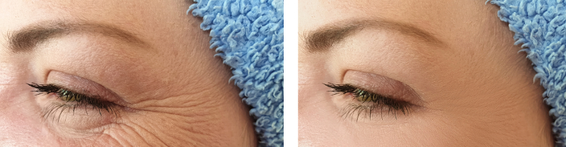

Toxina Botulinica
Las arrugas y líneas de expresión a lo largo de los años
Las líneas de expresión faciales se van marcando con el desarrollo de la persona. Con el paso de los años se van haciendo cada vez más evidentes debido a la tracción natural de los músculos de la expresión facial a lo que se suma la acción nociva a nivel de la piel del sol o tóxicos como el cigarrillo, todo lo cual acentúa y aceleran la profundización de las arrugas.
Nuestra filosofía para la aplicación de toxina botulínica.
Nosotros realizamos una técnica de aplicación que brinda resultados naturales, suavizando las arrugas faciales, pero sin generar expresiones marcadas como la elevación demasiado exagerada de la cola de las cejas que genera una apariencia malvada en las personas. El secreto es que el resultado sea natural y que pase desapercibido en términos de expresiones estereotipadas que constituyen estigmas de haberse colocado toxina botulínica.
Como actúa la toxina botulínica?
La principal acción de la toxina botulínica es actuar a nivel de la unión neuromuscular determinando conceptualmente la relacación de los musculos faciales y por ende disminuye la tracción de los mismos a nivel de la piel, relajándolos y alisando las líneas de expresión.
En que personas es más beneficiosa la aplicación de toxina botulínica?
Por lo dicho anteriormente, el uso de toxina botulínica esta especialmente indicado en personas relativamente jóvenes que presentan arrugas marcadas pero que no llegan a tener flaccidez cutánea
Nosotros aconsejamos a nuestros pacientes que difieran lo máximo posible el comienzo de la aplicación de toxina botulínica, sobre todo en pacientes muy jóvenes.
También desaconsejamos el uso de toxina botulínica en pacientes mayores que presentan grados notorios de flaccidez cutánea o arrugas muy profundas, ya que el efecto del tratamiento no es tan evidente.
Como se aplica la toxina botulínica?
La toxina botulínica se inyecta con agujas ultrafinas que casi no generan dolor, en puntos específicos debajo de la piel, sobre los músculos faciales de la expresión.
Es sumamente importante conocer la anatomía de los musculos de la cara (de la expresión), ya que de ello depende el efecto natural o artificial que pueda generar el tratamiento. Nuestro secreto es realizarlo con determinadas técnicas que producen la relajación de los músculos faciales, atenuando las marcas de expresión facial y las arrugas, dejando efectos totalmente naturales.

En que áreas de la cara se aconseja aplicar la toxina botulínica y en cuales no?
Nosotros aconsejamos su uso para el tratamiento de la frente, entrecejo y las patas de gallo donde este tratamiento logra efectos excelentes y muy gratificantes para el paciente.
No aconsejamos ni realizamos este tratamiento en arrugas peribucales, mejilla o cuello ya que consideramos que los potenciales efectos adversos no son aceptables.
Quienes son los más idóneos para realizar tratamientos con toxina botulínica?
Dado que es sumamente importante que quien realice este tratamiento tenga un conocimiento preciso de la anatomía de los músculos faciales y tenga conocimientos sobre la farmacodinamia y la técnica de uso de la toxina botulínica, es que aconsejamos que quien la administra tenga un título de médico y preferentemente sea un Cirujano Plástico, un dermatólogo o un especialista en medicina estética certificado.
Si bien este tratamiento hoy puede verse por algunas personas casi como un tratamiento cosmético y se le tiende a restar importancia, la aplicación correcta es una verdadera ciencia que tiene un fuerte componente de técnica y arte. Es por ello que recomendamos que elijan profesionales formados y que se hayan especializado en el uso serio de este producto.
Todos los productos de toxina botulínica son iguales?
La respuesta es definitivamente no. No vamos a realizar una comparación entre las marcas por razones éticas y para evitar conflictos de interés. Pero claramente no todos los productos duran lo mismo, ni generan el mismo efecto.
En nuestra práctica utilizamos marcas de excelente calidad que logran una duración mínima de 6 meses y en algunos casos pueden durar de 8 a 10 meses.
Cada cuanto tiempo se puede o debe aplicar toxina botulínica?
Recomendamos a nuestros pacientes realizar este tratamiento como máximo cada 6 meses, es decir 2 veces por año.
No recomendamos tratamientos más frecuentes (cada 3 o 4 meses), dado que, como dijimos, los productos que utilizamos duran por lo menos 6 meses y por otra parte porque el hecho de realizar tratamientos muy frecuentes, puede llevar a la producción de anticuerpos anti-toxina botulínica, lo cual disminuye con el tiempo la eficacia de este tratamiento, sin mencionar que realizar tratamientos frecuentes resulta más costoso para el paciente.
En este sentido también desaconsejamos los “retoques” al poco tiempo de realizar la aplicación, justamente por el riesgo de generar anticuerpos anti-toxina botulínica.
Por ello intentamos ser muy meticulosos al momento de realizar este tratamiento para evitar que aparezcan asimetrías. En caso que quede alguna arruga residual, recomendamos el uso de relleno con Hialurónico en vez de un retoque con toxina botulínica.
Cuidados posteriores
Posteriormente al tratamiento, se desaconseja el ejercicio intenso en las primeras 24 horas. No indicamos masajes de ningún tipo ya que consideramos que el producto tiene que tender a quedar en el lugar donde lo aplicamos.
El edema o inflamación es imperceptible aunque no son raros los pequeños moretones en algún sitio de punción, lo cual puede disimularse con maquillaje. Este tratamiento no genera dolor aunque los pacientes tratados por primera vez, pueden experimentar un dolor de cabeza leve que calma con analgésicos comunes. Está completamente contraindicado en el embarazo o la lactancia.
Toxina Botulínica
Tratamiento de las arrugas faciales en frente, entrecejo y patas de gallo
Ver Video